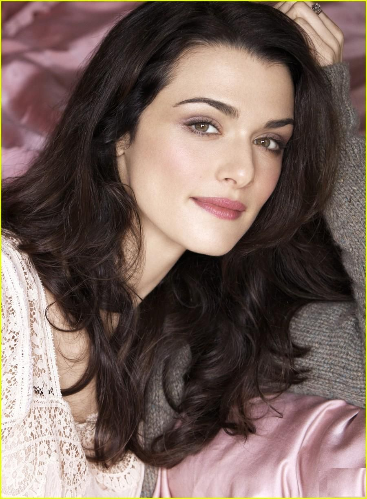
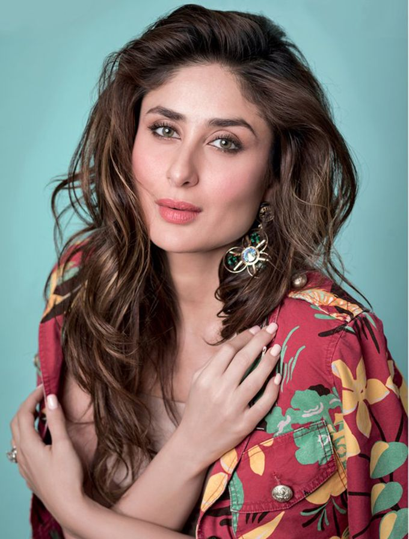
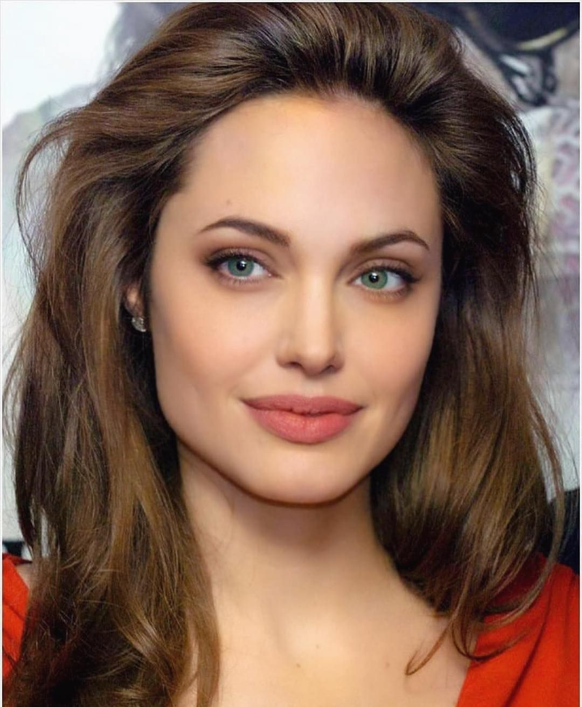

Skip to main content
Hello, welcome to my first website. Here, I am going to talk about my favourite actresses of all time. Now that I
start thinking about it, it's a very long list! Still, there are some who always occupy the top position. Enjoy!
-
Rachel Weisz

- Born on 7th March, 1970, Rachel Weisz is an English actress who is known for her roles in independent
films and blockbusters.
- She also won an Academy Award for her film "The Constant Gardener"!
- Some of my favourite movies starring her include "The Mummy", "The Mummy Returns", "Agora" and "Black
Widow".
-
Kareena Kapoor

- Born on 21st September, 1980, Kareena Kapoor is an Indian actress who is known for her versatile acting
in diverse roles, from romantic comedies to crime thrillers.
- Some of my favourite movies are "Jab We Met", "Bajrangi Bhaijaan","Jaane Jaan"
-
Angelina Jolie

- Born on 4th June, 1975, Angelina Jolie is an American actress , filmmaker and humanitarian.
- She also won many awards like Academy Award, Tony Award and was the former ambassador for the UN's
refugee agency.
- My favourite movies are "Salt", "Tomb Raider", "Wanted","Maleficent"
-
Anne Hathaway
- Born on 12th November, 1982, Anne Hathaway is an American actress.
- Her accolades include an Academy Award, a British Academy Film Award and much more!
- My favourtie movies are "The Princes Diaries", "The Intern","The Devil wears Prada","Interstellar" (it
is
a never-ending list!)
-
Selena Gomez
- Born on 22nd July, 1992, Selena Gomez is an American singer, actress and producer.
- Some of my favourite movies are "The Dead Don't Die","Monte Carlo","Getaway"